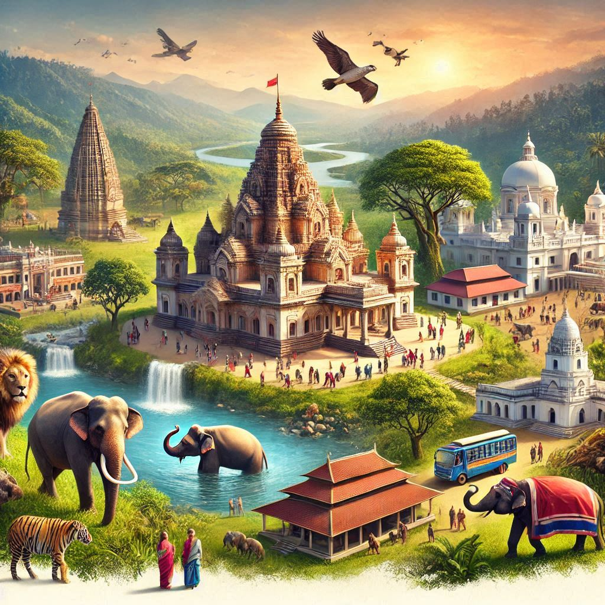
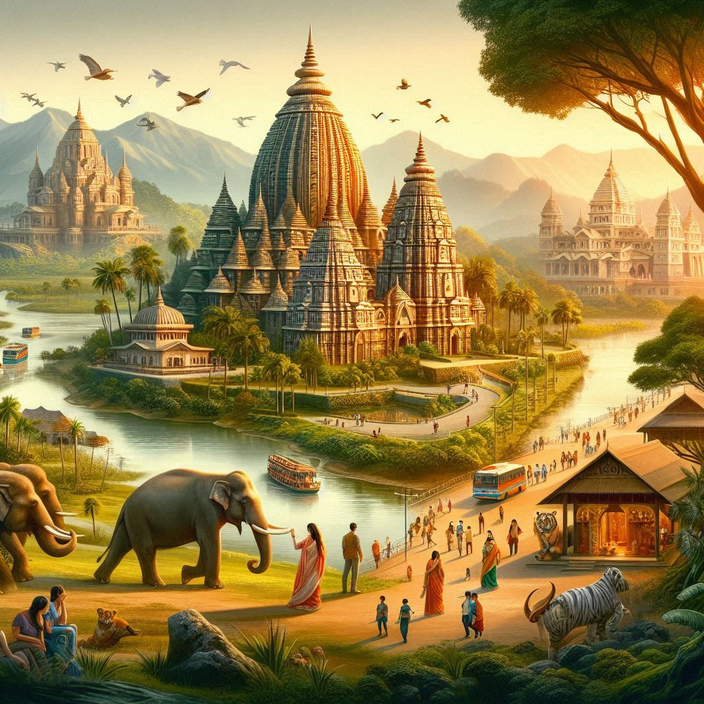

Tripura, with its rich cultural heritage, scenic landscapes, and historical landmarks, offers a unique travel experience for tourists. Here’s an overview of key attractions and tourism highlights in the state:
1. Historical Sites
- Ujjayanta Palace: Once the royal palace of the Manikya dynasty, this stunning palace in Agartala is now a museum showcasing the state's history and culture. Its beautiful architecture and gardens are a major draw for visitors.
- Tripura Sundari Temple: Located in Udaipur, this ancient temple is dedicated to Goddess Tripura Sundari, one of the 51 Shakti Peethas. It is an important pilgrimage site and a fine example of the region’s religious architecture.
- Neermahal: This water palace, situated on the Lake Rudrasagar, was built in the 18th century by King Bir Bikram Manikya. It is known for its beautiful setting and blends Hindu and Islamic architectural styles.
2. Natural Attractions
- Jampui Hills: Famous for its pleasant climate, lush greenery, and orange orchards, the Jampui Hills are ideal for trekking, nature walks, and enjoying panoramic views of the landscape.
- Sepahijala Wildlife Sanctuary: Located near Agartala, this sanctuary is home to diverse flora and fauna, including various species of birds, monkeys, and reptiles. It also features a beautiful lake and a botanical garden.
- Rudrasagar Lake: This scenic lake, next to Neermahal, is perfect for boating and enjoying the surrounding natural beauty.
3. Cultural Experiences
- Tribal Villages: Visitors can explore tribal villages to experience the rich culture, traditions, and crafts of various indigenous communities. Engaging with local artisans and witnessing traditional ceremonies can be enriching.
- Festivals: Experiencing local festivals, such as Kharchi, Durga Puja, and Bihu, provides insight into the vibrant culture of Tripura. Festivals often include traditional dances, music, and delicious local cuisine.
4. Adventure Activities
- Trekking and Hiking: The hilly terrains of Tripura offer several trekking trails, particularly in the Jampui Hills and other forested areas. Nature enthusiasts can enjoy hiking amidst the lush landscapes.
- Bird Watching: With its rich biodiversity, Tripura is a haven for bird watchers. The Sepahijala Wildlife Sanctuary and other natural areas are excellent spots for observing a variety of bird species.


5. Culinary Tourism
- Local Cuisine: Tripura’s cuisine is diverse and flavorful. Tourists can explore local markets and eateries to sample traditional dishes like Mui Borok, Masor Tenga, and various types of pitha (rice cakes). Culinary tours can provide a deeper understanding of the region's food culture.
6. Accessibility
- Air Travel: The Maharaja Bir Bikram Airport in Agartala connects Tripura to major cities like Kolkata and Guwahati, making it accessible for tourists.
- Road Connectivity: Tripura has a good road network, with National Highway 8 connecting it to other northeastern states and the rest of India. Public and private transport options are available for getting around.
7. Accommodations
- Hotels and Guesthouses: Tripura offers a range of accommodations, from budget hotels to more upscale options in Agartala and other major towns. There are also government-run guesthouses and homestays for a more local experience.
Conclusion
Tripura is a hidden gem in northeastern India, offering a blend of natural beauty, cultural richness, and historical significance. Whether exploring ancient temples, trekking through the hills, or engaging with local tribes, tourists can experience the unique essence of Tripura. Its relatively untouched landscapes and diverse cultural heritage make it an appealing destination for those looking to explore the lesser-known parts of India.